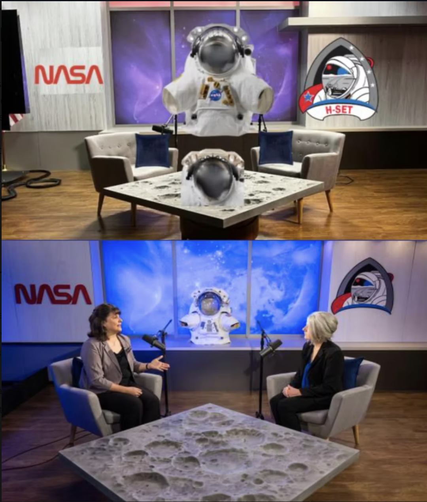
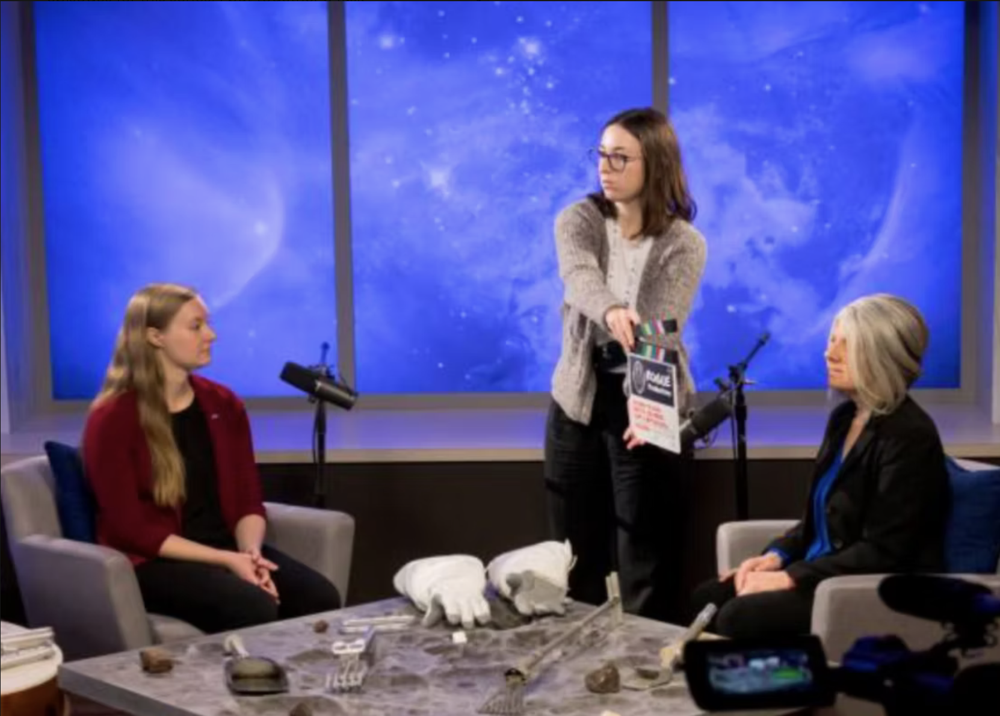
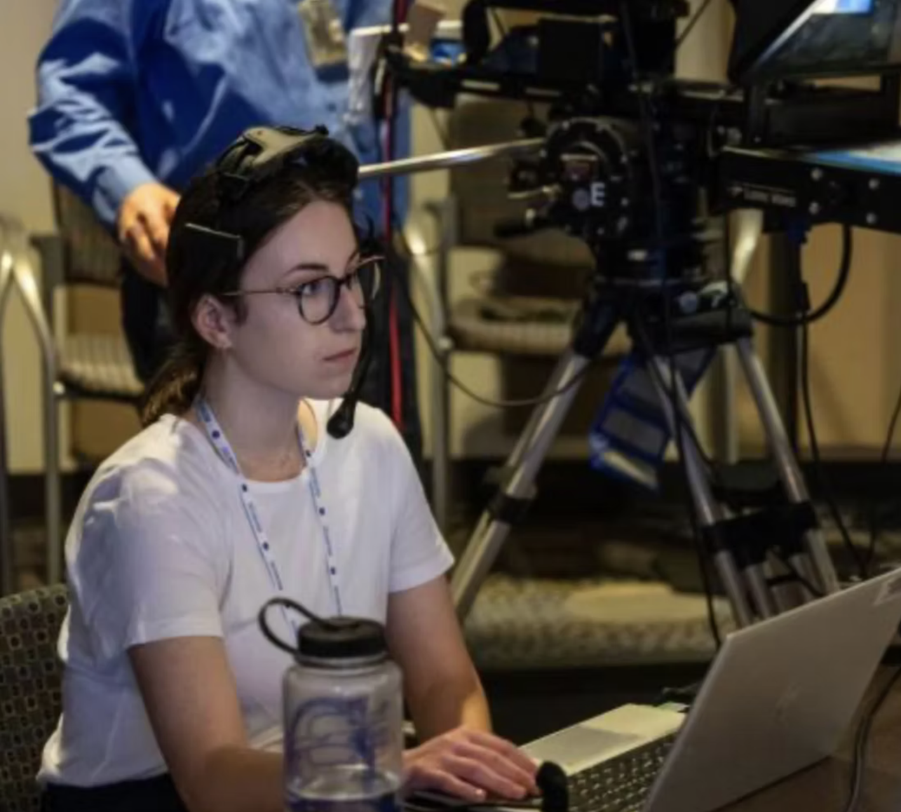
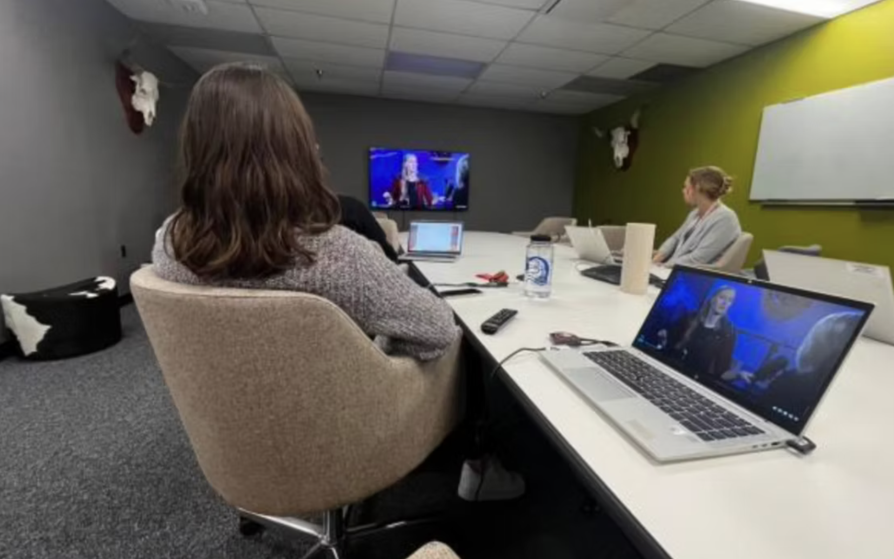

Watch the First Episode

— Video & Audio / Documentary Series
A cinematic educational video series designed to make lunar science accessible and engaging. This project blends storytelling, research, and visual design to create an immersive educational experience about NASA's Artemis Missions.
— About the Project
This project focused on creating a multi-part video series about lunar exploration. There are four episodes total, each with two different sessions: Subject-Matter Expert sessions filmed in the studio, and Experiential Field Reports filmed on location.
— How It Was Made
Before filming interviews, I helped in the planning process. Because we were planning to do so many episodes for this series, I put together a task checklist on Excel to keep everyone on the the up-to-date and on track. I also helped write some of the opening scripts and put it in a Teleprompter format.
On set, I mostly acted as a Production Assistant. I helped set up the equipment, took care of the talent, and worked the teleprompter. On day on set, I acted as Studio Operator.
In the post-production phase, we found that we had filmed a lot of interesting footage in the studios, but we were unsure of what to cut for the finished product. I pitched the idea of a focus group and held one with the interns. The target audience for the series was high school and college-aged students, which is why I mostly chose the interns for the focus group.
— Full Series
— Outcomes
The series became quite popular on the Learn With NASA YouTube channel. While most of the episodes had about 3k views, the Lunar Rovers episode had about 9.1k views.
— Behind the Scenes



